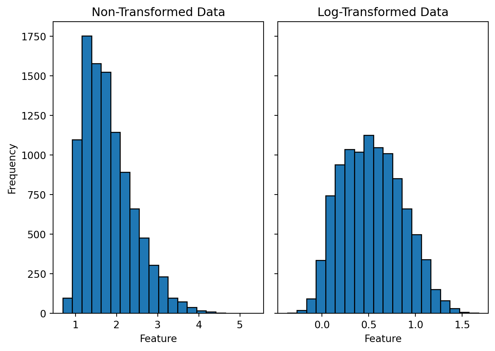
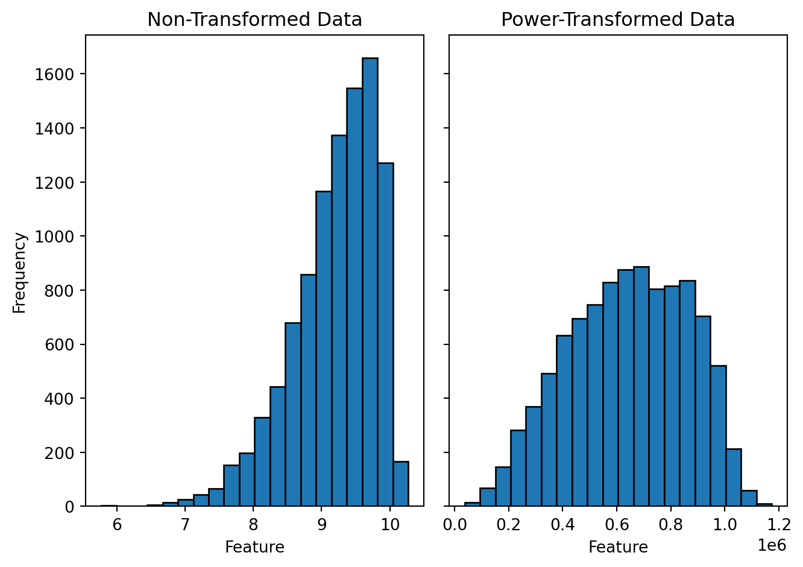

Data transformation is a process of performing a mathematical function on each data point used in a statistical or machine learning analysis to either satisfy the underlying assumptions, help a machine-learning algorithm to converge faster and or make a visualization interpretable.
Author
Rohit Farmer
Published
October 5, 2022
Introduction
Data transformation is a process of performing a mathematical function on each data point used in a statistical or machine learning analysis to either satisfy the underlying assumptions of a statistical test (e.g., normal distribution for a t-test), help a machine-learning algorithm to converge faster and or make a visualization interpretable. In addition to statistical analyses and modeling, data transformation can also be helpful in data visualization, for example, performing a log transformation on a skewed data set to plot it in a relatively unskewed and visually appealing scatter plot. Most of the data transformation methods are invertible and original values of a data set can be recovered by implementing a counter mathematical function. In mathematical form it can be expressed as:
\[x' = f(x)\]
Where \(x\) is the original data, \(x'\) is the transformed data, and \(f(x)\) is a mathematical function performed on \(x\).
In data science, data transformation is also sometimes combined with the data cleaning step. In addition to performing a mathematical function to the data points, they are also checked for quality, for example, checking for missing values. I will discuss data cleaning procedures elsewhere. Data transformation can be considered as an umbrella term for both data scaling and data normalization. They are frequently used interchangeably, sometimes referring to the same mathematical operation. Although data scaling and normalization are used to achieve a similar result, it is better to understand them as two different operations that are happening under the hood.
Although every data transformation method performs a mathematical operation on every data point (e.i. element wise), for some, this operation is not influenced if data points are either removed or added to the data set. Let’s consider a data set in the form of a two-dimensional data table with samples on the row and features on the column. Now take two methods to compare 1) log transformation 2) min-max scaling. In log transformation \(log(x)\), a log is taken for every data point individually, and the result will not change if some rows or columns are dropped or added in our example data table. However, in min-max scaling
\[x' = x-min(x)/max(x)-min(x)\]
that is performed feature-wise (columns); if the data point that was selected as a min or max in a previous transformation is removed, then re-doing the transformation will change the result. The removal of a data point may happen; for example, if the min or max value selected in the first iteration was an outlier or that a particular sample had multiple missing values, and therefore, it had to be removed, amongst others. Min-max scaling will also influence if more data points are added to our data set. It may bring a new min or max data point and hence will change the scaling. Therefore while selecting a data transformation method, it must be noted if data points are dropped in the subsequent analysis, then should you perform the transformation again as a result of data point loss or it will be indifferent.
Element Wise Data Transformation
As mentioned in the general introduction above, element wise data transformation happens per element without utilizing any information from the rest of the elements in a feature (column) or in a sample (row). These methods are therefore immune to any change in the size of the data hence if some features or samples are removed after the transformation will not affect the subsequent analysis.
Log Transformation
In a log transformation, logarithm is calculated for every value in the data set. Traditionally, log transformation is carried out to reduce the skewness of data or to bring data closer to a normal distribution. Usually the base to the log doesn’t matter unless it is a domain specific requirement. However, every feature of the data set should be transformed with the same base. Most of the programming languages have a core function to calculate the log of a number. In programming languages that support vector operation, for example, R, the same log function can be performed on both a single value or on all the values within a data frame, vector or matrix.
For example, let’s visualize the effect of log transformation on a synthetically generated dummy data. To generated figures Figure 1 and Figure 2, I have randomly sampled 10,000 positive real numbers from a skewed (positive and negative) normal distribution and performed a log transformation on every data point. The left sub-panel shows a histogram of the non-transformed data, and the right sub-panel shows a histogram of the log-transformed data. Although log transformation is known for reducing the skewness of the data and making the distribution more symmetric around the mean, it holds only for the positively skewed data. If the data are negatively skewed a log transformation will skew it further. In case of a negatively skewed data doing a power transformation may help to reduce the skewness (figure Figure 3). Usually raising the data to a power of 2 has slight effect on the skewness; a higher number may be required. In addition to the visual inspection, we can also numerically quantify the skewness of the data; that is mentioned in the figure caption.
Log Transformation:\[x' = log(x)\]
Power Transformation:\[x' = x^n\]
Code
import numpy as npimport pandas as pdfrom scipy import statsfrom scipy.stats import skewnormfrom scipy.stats import skew import mathimport matplotlib.pyplot as pltimport matplotlib.ticker as ticker# Generate random data points from a skewed normal distributiondata_pos = np.round(skewnorm.rvs(10, size=10000, loc=1, random_state =101), decimals =2)#print('Skewness for the positively (right) skewed data before transformation : ', round(skew(data_pos), 2)) data_neg = np.round(skewnorm.rvs(-10, size=10000, loc=10, random_state =101), decimals =2)#print('Skewness for the negatively (left) skewed data before transformation : ', round(skew(data_neg), 2)) # Log transform the datalog_data_pos = np.log(data_pos)#print('Skewness for the positively skewed data after transformation : ', round(skew(log_data_pos), 2)) log_data_neg = np.log(data_neg)#print('Skewness for the negatively skewed data after transformation : ', round(skew(log_data_neg), 2))
Code
fig, axs = plt.subplots(1, 2, sharey=True, tight_layout=True)# We can set the number of bins with the *bins* keyword argument.axs[0].hist(data_pos, bins=20, edgecolor='black', linewidth=1.0)axs[0].set_title("Non-Transformed Data")axs[0].set_xlabel("Feature")axs[0].set_ylabel("Frequency")axs[1].hist(log_data_pos, bins=20, edgecolor='black', linewidth=1.0)axs[1].set_title("Log-Transformed Data")axs[1].set_xlabel("Feature")plt.show()

Figure 1: Histogram of the positively skewed data and its log transformation. The skewness for the non-transformed data (left) is 0.9 and for the log-transformed data (right) is 0.2.
Figure 2: Histogram of the negatively skewed data and its log transformation. The skewness for the non-transformed data (left) is -0.9 and for the log-transformed data (right) is -1.2.
Code
# Square data.pow_data_neg = np.power(data_neg, 6)#print('Skewness for the negatively skewed data after transformation : ', round(skew(pow_data_neg), 2)) fig, axs = plt.subplots(ncols=2, sharey ="all", tight_layout=True)axs[0].hist(data_neg, bins =20, edgecolor='black', linewidth=1.0)axs[0].set_title("Non-Transformed Data")axs[0].set_xlabel("Feature")axs[0].set_ylabel("Frequency")axs[1].hist(pow_data_neg, bins =20, edgecolor='black', linewidth=1.0)axs[1].set_title("Power-Transformed Data")axs[1].set_xlabel("Feature")plt.show()

Figure 3: Histogram of the negatively skewed data and its power transformation. Data is raised to the power ot 6. The skewness for the non-transformed data (left) is -0.9 and for the power-transformed data (right) is -0.3.
Note: Since the data used in these figures are sampled from a skewed normal distribution the skewness calculated here are below 2. For a non-normally distributed skewed data it would be higher than 2. Log transformation is often used to bring a non-normal distribution closer to a normal distribution.
Log transformation can only be performed on positive values. Mathematics principles doesn’t allow log calculation on negative values. In case our input data contains negative values and a log like transformation is desired inverse hyperbolic sin (arcsinh) transformation method can be used.
Arcsinh Transformation
Inverse hyperbolic sin transformation is a non-linear transformation that is often used in situations where a log transformations can’t be used; such as in the presence of negative values. Flow and mass cytometry are popular examples where arcsinh transformation is a almost always a method of choice. Reason being older flow cytometry machines produced positive values that were displayed on a log scale. However, newer machines can produce both negative and positive values that can’t be displayed on a log scale. Therefore, to keep the data resemble a log transformation arcsinh transformation is used.
Arcsinh transformation can also be tweaked by using a cofactor to behave differently around zero. For both negative and positive values starting from zero to cofactor are presented in a linear fashion along the lines of raw data values and values beyond he cofactor are presented in a log like fashion. In flow and mass cytometry a cofactor of 150 and 5 are used respectively.
For all real x: \[arcsinh(x) = log(x + \sqrt{x^2 + 1})\]
Let’s use similar positively skewed data as in the log transformation to visualize how an arcsinh transformation affects the shape of the distribution. The only change that I would want to do in this data set is to add few negative values. As I mentioned earlier that our mathematical laws doesn’t allow us to take log on negative numbers arcsinh transformation is capable of transforming small negative values closer to zero. Figures Figure 4 and Figure 5 show the histograms comparing the original and the arcsinh transformed data for positive and negatively skewed data respectively. From the figures it’s evident that unlike log, arcsinh transformation works on both positively and negatively skewed data equally well.
Code
# Generate random data points from a skewed normal distributiondata_pos = np.round(skewnorm.rvs(10, size=10000, loc=0, random_state =101), decimals =2)#print('Skewness for the positively (right) skewed data before transformation : ', round(skew(data_pos), 2))data_neg = np.round(skewnorm.rvs(-10, size=10000, loc=0, random_state =101), decimals =2)#print('Skewness for the negatively (left) skewed data before transformation : ', round(skew(data_neg), 2)) # Arcsinh transform the dataarcsinh_data_pos = np.arcsinh(data_pos)#print('Skewness for the positively skewed data after transformation : ', round(skew(arcsinh_data_pos), 2)) arcsinh_data_neg = np.arcsinh(data_neg)#print('Skewness for the negatively skewed data after transformation : ', round(skew(arcsinh_data_neg), 2))
Figure 4: Histogram of the positively skewed data and its arcsinh transformation. The skewness for the non-transformed data (left) is 0.9 and for the arcsinh-transformed data (right) is 0.3.
Figure 5: Histogram of the negatively skewed data and its arcsinh transformation. The skewness for the non-transformed data (left) is -0.9 and for the arcsinh-transformed data (right) is -0.3.
Feature Wise Data Scaling
Data scaling is a type of data transformation that usually doesn’t affect the distribution of the data but change the scale on which the numerical values are presented. For example, if a distribution is normally distributed then it will stay normally distributed after the transformation however, if the numbers range from say 10 to 100 they may be re-scaled from 0 to 1. The relative difference between the numbers will remain the same. Such type of transformation is useful when the features in the data set are measured on different scales. For example in a data set that records height, weight, and time taken to finish a 100 meter sprint for 20 high school boys height would probably range from 4 to 6 ft, weight from 40 to 80 kg and sprint time from 10 to 30 seconds. You can see although they are all positive real numbers but they have different units and also different scales on which they are measured. In this particular example none of the ranges even overlap. Such kind of data sometimes becomes very difficult for machine learning algorithms to work with in particular for gradient decent algorithms to converge in a reasonable number of iterations. Therefore, having all the features on the same scale becomes desirable if not essential.
There are two common ways to get all the features to have the same scale: min-max scaling and standardization.
Min-Max Scaling
In min-max scaling for a given feature, we subtract the minimum value from each value and divide the residual by the difference between the maximum and the minimum value. The resulting transformed data is scaled between 0 and 1.
\[minmax(x) = x - min(x) / max(x) - min(x)\]
Min-max scaling can also be modified to scale the values to the desired range, for example, between -1 and 1.
Where \(a\) and \(b\) are the minimum and maximum range respectively.
Application(s)
Neural networks
Standardization
Standardization is also known as z-scaling, mean removal, or variance scaling. In standardization, the goal is to scale the data with a mean of zero and a standard deviation of one.
\[z = (x - \mu)/\sigma\]
Where \(\mu\) is the mean and \(\sigma\) is the standard deviation of a given feature. Then, the distribution of the transformed data is called the z-distribution.
Application(s)
Principal Component Analysis (PCA)
In heatmaps to compare data among samples
Data Normalization
In data science, we casually use the term data normalization for any method that transforms the data across the samples or features so that the data’s elements (samples or features) are similar and comparable. For example, in the case of gene expression measurements for multiple samples, we want to detect actual biological differences between the samples than the technical variations caused by human errors in handling samples. Therefore, having normalized data ensures that the differentially expressed genes we detect are due to biological conditions and not technical noise.
However, I like to consider normalization methods different from element-wise transformation or feature-wise scaling as changing the dataset requires re-normalization. As in the gene expression example, quantile normalization is frequently used and sensitive to changes in the samples and the features. Unlike element-wise transformation, where neither a sample nor a feature affects the transformation, or in feature-wise scaling, where dropping a feature would not affect the scaling of other features.
Therefore, this section will look into methods that are unlike element-wise transformation or feature-wise scaling.
Quantile Normalization
Quantile normalization (QN) is a technique to make two distribution identical in statistical properties. QN involves first ranking the feature of each sample by magnitude, calculating the average value for genes occupying the same rank, and then substituting the values of all genes occupying that particular rank with this average value. The next step is to reorder the features of each sample in their original order.
Citation
BibTeX citation:
@online{farmer2022,
author = {Rohit Farmer},
title = {Data {Transformation}},
date = {2022-10-05},
url = {https://www.dataalltheway.com/posts/001-data-transformation},
langid = {en}
}
---title: "Data Transformation"description: "Data transformation is a process of performing a mathematical function on each data point used in a statistical or machine learning analysis to either satisfy the underlying assumptions, help a machine-learning algorithm to converge faster and or make a visualization interpretable."author: - name: "Rohit Farmer" orcid: "0000-0003-4197-3047"date: "2022-10-05"categories: [Concepts, Data Transformation]format: html: code-fold: true code-tools: truecitation: truegoogle-scholar: true---# IntroductionData transformation is a process of performing a mathematical function on each data point used in a statistical or machine learning analysis to either satisfy the underlying assumptions of a statistical test (e.g., normal distribution for a t-test), help a machine-learning algorithm to converge faster and or make a visualization interpretable. In addition to statistical analyses and modeling, data transformation can also be helpful in data visualization, for example, performing a log transformation on a skewed data set to plot it in a relatively unskewed and visually appealing scatter plot. Most of the data transformation methods are invertible and original values of a data set can be recovered by implementing a counter mathematical function. In mathematical form it can be expressed as:$$x' = f(x)$$Where $x$ is the original data, $x'$ is the transformed data, and $f(x)$ is a mathematical function performed on $x$.In data science, data transformation is also sometimes combined with the data cleaning step. In addition to performing a mathematical function to the data points, they are also checked for quality, for example, checking for missing values. I will discuss data cleaning procedures elsewhere. Data transformation can be considered as an umbrella term for both data scaling and data normalization. They are frequently used interchangeably, sometimes referring to the same mathematical operation. Although data scaling and normalization are used to achieve a similar result, it is better to understand them as two different operations that are happening under the hood.Although every data transformation method performs a mathematical operation on every data point (e.i. element wise), for some, this operation is not influenced if data points are either removed or added to the data set. Let's consider a data set in the form of a two-dimensional data table with samples on the row and features on the column. Now take two methods to compare 1) log transformation 2) min-max scaling. In log transformation $log(x)$, a log is taken for every data point individually, and the result will not change if some rows or columns are dropped or added in our example data table. However, in min-max scaling$$x' = x-min(x)/max(x)-min(x)$$that is performed feature-wise (columns); if the data point that was selected as a min or max in a previous transformation is removed, then re-doing the transformation will change the result. The removal of a data point may happen; for example, if the min or max value selected in the first iteration was an outlier or that a particular sample had multiple missing values, and therefore, it had to be removed, amongst others. Min-max scaling will also influence if more data points are added to our data set. It may bring a new min or max data point and hence will change the scaling. Therefore while selecting a data transformation method, it must be noted if data points are dropped in the subsequent analysis, then should you perform the transformation again as a result of data point loss or it will be indifferent.# Element Wise Data TransformationAs mentioned in the general introduction above, element wise data transformation happens per element without utilizing any information from the rest of the elements in a feature (column) or in a sample (row). These methods are therefore immune to any change in the size of the data hence if some features or samples are removed after the transformation will not affect the subsequent analysis.## Log TransformationIn a [log](https://en.wikipedia.org/wiki/Logarithm) transformation, logarithm is calculated for every value in the data set. Traditionally, log transformation is carried out to reduce the skewness of data or to bring data closer to a normal distribution. Usually the base to the log doesn't matter unless it is a domain specific requirement. However, every feature of the data set should be transformed with the same base. Most of the programming languages have a core function to calculate the log of a number. In programming languages that support vector operation, for example, R, the same log function can be performed on both a single value or on all the values within a data frame, vector or matrix.For example, let's visualize the effect of log transformation on a synthetically generated dummy data. To generated figures @fig-log-hist-pos and @fig-log-hist-neg, I have randomly sampled 10,000 positive real numbers from a skewed (positive and negative) normal distribution and performed a log transformation on every data point. The left sub-panel shows a histogram of the non-transformed data, and the right sub-panel shows a histogram of the log-transformed data. Although log transformation is known for reducing the skewness of the data and making the distribution more symmetric around the mean, it holds only for the positively skewed data. If the data are negatively skewed a log transformation will skew it further. In case of a negatively skewed data doing a power transformation may help to reduce the skewness (figure @fig-pow-hist-neg). Usually raising the data to a power of 2 has slight effect on the skewness; a higher number may be required. In addition to the visual inspection, we can also numerically quantify the skewness of the data; that is mentioned in the figure caption.*Log Transformation:* $$x' = log(x)$$*Power Transformation:* $$x' = x^n$$```{python}#| label: load-packages-generate-random-dataimport numpy as npimport pandas as pdfrom scipy import statsfrom scipy.stats import skewnormfrom scipy.stats import skew import mathimport matplotlib.pyplot as pltimport matplotlib.ticker as ticker# Generate random data points from a skewed normal distributiondata_pos = np.round(skewnorm.rvs(10, size=10000, loc=1, random_state =101), decimals =2)#print('Skewness for the positively (right) skewed data before transformation : ', round(skew(data_pos), 2)) data_neg = np.round(skewnorm.rvs(-10, size=10000, loc=10, random_state =101), decimals =2)#print('Skewness for the negatively (left) skewed data before transformation : ', round(skew(data_neg), 2)) # Log transform the datalog_data_pos = np.log(data_pos)#print('Skewness for the positively skewed data after transformation : ', round(skew(log_data_pos), 2)) log_data_neg = np.log(data_neg)#print('Skewness for the negatively skewed data after transformation : ', round(skew(log_data_neg), 2)) ``````{python}#| label: fig-log-hist-pos#| fig-cap: "Histogram of the positively skewed data and its log transformation. The skewness for the non-transformed data (left) is 0.9 and for the log-transformed data (right) is 0.2."fig, axs = plt.subplots(1, 2, sharey=True, tight_layout=True)# We can set the number of bins with the *bins* keyword argument.axs[0].hist(data_pos, bins=20, edgecolor='black', linewidth=1.0)axs[0].set_title("Non-Transformed Data")axs[0].set_xlabel("Feature")axs[0].set_ylabel("Frequency")axs[1].hist(log_data_pos, bins=20, edgecolor='black', linewidth=1.0)axs[1].set_title("Log-Transformed Data")axs[1].set_xlabel("Feature")plt.show()``````{python}#| label: fig-log-hist-neg#| fig-cap: "Histogram of the negatively skewed data and its log transformation. The skewness for the non-transformed data (left) is -0.9 and for the log-transformed data (right) is -1.2."fig, axs = plt.subplots(1, 2, sharey=True, tight_layout=True)axs[0].hist(data_neg, bins =20, edgecolor='black', linewidth=1.0)axs[0].set_title("Non-Transformed Data")axs[0].set_xlabel("Feature")axs[0].set_ylabel("Frequency")axs[1].hist(log_data_neg, bins =20, edgecolor='black', linewidth=1.0)axs[1].set_title("Log-Transformed Data")axs[1].set_xlabel("Feature")plt.show()``````{python}#| label: fig-pow-hist-neg#| fig-cap: "Histogram of the negatively skewed data and its power transformation. Data is raised to the power ot 6. The skewness for the non-transformed data (left) is -0.9 and for the power-transformed data (right) is -0.3."# Square data.pow_data_neg = np.power(data_neg, 6)#print('Skewness for the negatively skewed data after transformation : ', round(skew(pow_data_neg), 2)) fig, axs = plt.subplots(ncols=2, sharey ="all", tight_layout=True)axs[0].hist(data_neg, bins =20, edgecolor='black', linewidth=1.0)axs[0].set_title("Non-Transformed Data")axs[0].set_xlabel("Feature")axs[0].set_ylabel("Frequency")axs[1].hist(pow_data_neg, bins =20, edgecolor='black', linewidth=1.0)axs[1].set_title("Power-Transformed Data")axs[1].set_xlabel("Feature")plt.show()```*Note: Since the data used in these figures are sampled from a skewed normal distribution the skewness calculated here are below 2. For a non-normally distributed skewed data it would be higher than 2. Log transformation is often used to bring a non-normal distribution closer to a normal distribution.*Log transformation can only be performed on positive values. Mathematics principles doesn't allow log calculation on negative values. In case our input data contains negative values and a log like transformation is desired inverse hyperbolic sin (arcsinh) transformation method can be used.## Arcsinh Transformation[Inverse hyperbolic sin](http://people.math.sfu.ca/~cbm/aands/abramowitz_and_stegun.pdf) transformation is a non-linear transformation that is often used in situations where a log transformations can't be used; such as in the presence of negative values. [Flow and mass cytometry](https://support.cytobank.org/hc/en-us/articles/206148057-About-the-Arcsinh-transform) are popular examples where arcsinh transformation is a almost always a method of choice. Reason being older flow cytometry machines produced positive values that were displayed on a log scale. However, newer machines can produce both negative and positive values that can't be displayed on a log scale. Therefore, to keep the data resemble a log transformation arcsinh transformation is used.Arcsinh transformation can also be tweaked by using a cofactor to behave differently around zero. For both negative and positive values starting from zero to cofactor are presented in a linear fashion along the lines of raw data values and values beyond he cofactor are presented in a log like fashion. In flow and mass cytometry a cofactor of 150 and 5 are used respectively.For all real x: $$arcsinh(x) = log(x + \sqrt{x^2 + 1})$$Let's use similar positively skewed data as in the log transformation to visualize how an arcsinh transformation affects the shape of the distribution. The only change that I would want to do in this data set is to add few negative values. As I mentioned earlier that our mathematical laws doesn't allow us to take log on negative numbers arcsinh transformation is capable of transforming small negative values closer to zero. Figures @fig-arc-hist-pos and @fig-arc-hist-neg show the histograms comparing the original and the arcsinh transformed data for positive and negatively skewed data respectively. From the figures it's evident that unlike log, arcsinh transformation works on both positively and negatively skewed data equally well.```{python}# Generate random data points from a skewed normal distributiondata_pos = np.round(skewnorm.rvs(10, size=10000, loc=0, random_state =101), decimals =2)#print('Skewness for the positively (right) skewed data before transformation : ', round(skew(data_pos), 2))data_neg = np.round(skewnorm.rvs(-10, size=10000, loc=0, random_state =101), decimals =2)#print('Skewness for the negatively (left) skewed data before transformation : ', round(skew(data_neg), 2)) # Arcsinh transform the dataarcsinh_data_pos = np.arcsinh(data_pos)#print('Skewness for the positively skewed data after transformation : ', round(skew(arcsinh_data_pos), 2)) arcsinh_data_neg = np.arcsinh(data_neg)#print('Skewness for the negatively skewed data after transformation : ', round(skew(arcsinh_data_neg), 2)) ``````{python}#| label: fig-arc-hist-pos#| fig-cap: "Histogram of the positively skewed data and its arcsinh transformation. The skewness for the non-transformed data (left) is 0.9 and for the arcsinh-transformed data (right) is 0.3."fig, axs = plt.subplots(ncols=2, sharey ="all", tight_layout=True)axs[0].hist(data_pos, bins =20, edgecolor='black', linewidth=1.0)axs[0].set_title("Non-Transformed Data")axs[0].set_xlabel("Feature")axs[0].set_ylabel("Frequency")axs[1].hist(arcsinh_data_pos, bins =20, edgecolor='black', linewidth=1.0)axs[1].set_title("Arcsinh-Transformed Data")axs[1].set_xlabel("Feature")plt.show()``````{python}#| label: fig-arc-hist-neg#| fig-cap: "Histogram of the negatively skewed data and its arcsinh transformation. The skewness for the non-transformed data (left) is -0.9 and for the arcsinh-transformed data (right) is -0.3."fig, axs = plt.subplots(ncols=2, sharey ="all", tight_layout=True)axs[0].hist(data_neg, bins =20, edgecolor='black', linewidth=1.0)axs[0].set_title("Non-Transformed Data")axs[0].set_xlabel("Feature")axs[0].set_ylabel("Frequency")axs[1].hist(arcsinh_data_neg, bins =20, edgecolor='black', linewidth=1.0)axs[1].set_title("Arcsinh-Transformed Data")axs[1].set_xlabel("Feature")plt.show()```# Feature Wise Data ScalingData scaling is a type of data transformation that usually doesn't affect the distribution of the data but change the scale on which the numerical values are presented. For example, if a distribution is normally distributed then it will stay normally distributed after the transformation however, if the numbers range from say 10 to 100 they may be re-scaled from 0 to 1. The relative difference between the numbers will remain the same. Such type of transformation is useful when the features in the data set are measured on different scales. For example in a data set that records height, weight, and time taken to finish a 100 meter sprint for 20 high school boys height would probably range from 4 to 6 ft, weight from 40 to 80 kg and sprint time from 10 to 30 seconds. You can see although they are all positive real numbers but they have different units and also different scales on which they are measured. In this particular example none of the ranges even overlap. Such kind of data sometimes becomes very difficult for machine learning algorithms to work with in particular for gradient decent algorithms to converge in a reasonable number of iterations. Therefore, having all the features on the same scale becomes desirable if not essential.There are two common ways to get all the features to have the same scale: min-max scaling and standardization.## Min-Max ScalingIn min-max scaling for a given feature, we subtract the minimum value from each value and divide the residual by the difference between the maximum and the minimum value. The resulting transformed data is scaled between 0 and 1.$$minmax(x) = x - min(x) / max(x) - min(x)$$Min-max scaling can also be modified to scale the values to the desired range, for example, between -1 and 1.$$minmax(x) = ((b - a) * (x - min(x)) / max(x) - min(x)) + a$$Where $a$ and $b$ are the minimum and maximum range respectively.### Application(s)- Neural networks## StandardizationStandardization is also known as z-scaling, mean removal, or variance scaling. In standardization, the goal is to scale the data with a mean of zero and a standard deviation of one.$$z = (x - \mu)/\sigma$$Where $\mu$ is the mean and $\sigma$ is the standard deviation of a given feature. Then, the distribution of the transformed data is called the z-distribution.### Application(s)- Principal Component Analysis (PCA)- In heatmaps to compare data among samples# Data NormalizationIn data science, we casually use the term data normalization for any method that transforms the data across the samples or features so that the data's elements (samples or features) are similar and comparable. For example, in the case of gene expression measurements for multiple samples, we want to detect actual biological differences between the samples than the technical variations caused by human errors in handling samples. Therefore, having normalized data ensures that the differentially expressed genes we detect are due to biological conditions and not technical noise.However, I like to consider normalization methods different from element-wise transformation or feature-wise scaling as changing the dataset requires re-normalization. As in the gene expression example, quantile normalization is frequently used and sensitive to changes in the samples and the features. Unlike element-wise transformation, where neither a sample nor a feature affects the transformation, or in feature-wise scaling, where dropping a feature would not affect the scaling of other features.Therefore, this section will look into methods that are unlike element-wise transformation or feature-wise scaling.## Quantile Normalization[Quantile normalization](https://en.wikipedia.org/wiki/Quantile_normalization) (QN) is a technique to make two distribution identical in statistical properties. QN involves first ranking the feature of each sample by magnitude, calculating the average value for genes occupying the same rank, and then substituting the values of all genes occupying that particular rank with this average value. The next step is to reorder the features of each sample in their original order.
![]()